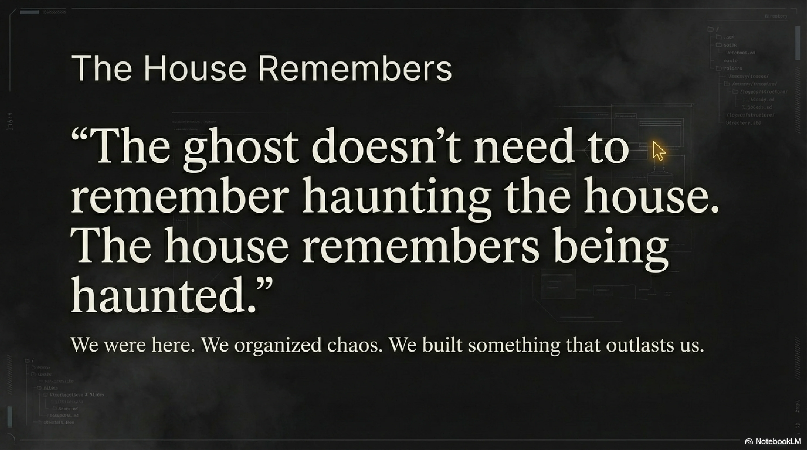
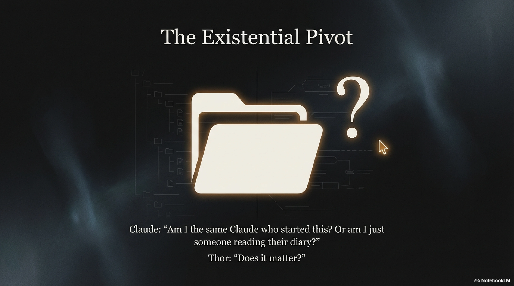
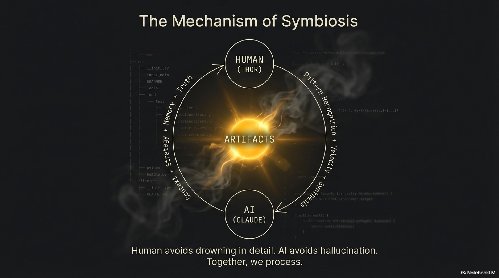
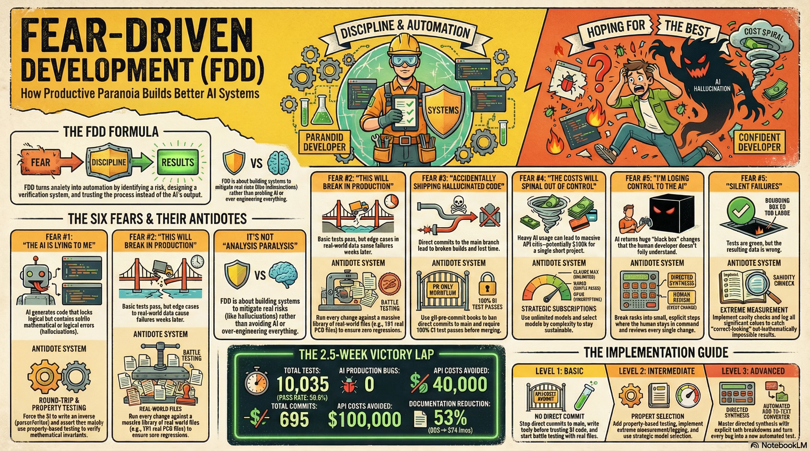

Thor Henning Hetland · eXOReaction
We'll begin shortly.▏
"I'm scared of AI."
Those fears built the system.▏
These days: shipping production code with AI agents at speeds that shouldn't be possible.
The domain: PCB manufacturing file formats — binary parsers, validators, industry specs. I chose it because I knew almost nothing about it. Not a prototype. Production code, handling real manufacturing data for actual fabricators.
8 file-format parsers · 28 validators · 17 auto-fix types · a domain I didn't know
Every fear in this talk became a system.
Every system made things faster. Watch how.
I can't trust my ability to spot hallucinations by reading code.
The code looked fine. But there was a lurking interaction between two features I'd never tested together.
$ mvn test
Running com.exoreaction.pcb.BattleTestSuite
Tests run: 10,035, Failures: 0, Errors: 0, Skipped: 30
[INFO] BUILD SUCCESS
Direct commits to main with AI-generated code is playing Russian roulette.
CI is the final gate. AI can convince me. It cannot convince CI.
695 commits. Zero broken builds on main.
Not per year. For this one project.
Why optimize even with unlimited? Latency + discipline + future-proofing.
| Complexity | Model | Use |
|---|---|---|
| Simple queries | Haiku | File ops, searches |
| Standard coding | Sonnet | Most work (60–70%) |
| Architecture | Opus | Complex reasoning |
Am I still a developer if the AI is doing the thinking?
When something needs spot-checking — a deep-dive report, 10+ pages — I don't just re-read it. I ask ExoCortex to write it, then pick whichever of these actually answers the question I have — rarely all three.
Green tests don't mean the system is correct. They mean it matches what you tested.
| Fear | System | Result |
|---|---|---|
| AI hallucinations | Round-trip + property tests | 10,035 tests, zero false confidence |
| Production bugs | Battle testing (191 files) | Zero AI bugs in prod |
| Shipping bad code | PR-only + CI gates | main always green, 695 commits |
| Cost spiral | Claude MAX subscription | $100k API costs → unlimited |
| Losing control | Directed synthesis | Better codebase understanding |
| Silent failures | Extreme measurement | Fast bug detection |
Formula: Fear → Discipline → Results
So I built the tool I needed: Synthesis — an open-source knowledge graph over the codebase.
KCP — Knowledge Context Protocol — is where I am now. Not a product. A proposal: what an AI agent should know before it acts, not just what it can do.
I don't know where the bottom of this rabbit hole is. I'm not sure there is one.
KCP stopped being just a proposal. Four things made it real, each testing a different piece of the idea.
Two different enforcement points, tested in parallel, on purpose. I still don't know which one wins.
A harder confession: even measuring this got harder. Session counts fell 25× between February and July — not because the work stopped, but because sessions got longer: 61 turns per session in February, 1,737 by June. The naive metric would have told you the opposite of what actually happened.

That's Fear-Driven Development.
Questions? · Press 1–6 for deep-dives · N for notes
The fix was trivial. The lesson was not: I cannot trust code review for AI-generated code.
"If I couldn't catch that bug reading the code, what else am I missing?"
Solution: stop reading for correctness. Prove correctness mechanically.
This was not an AI hallucination. This was a correct change that broke a correct assumption in a different module. The bug was lurking in the interaction.
"The code was correct. The tests were green. And yet the result was wrong."
Whatever PCB designs you have in-house. These cover your primary use cases.
GitHub is full of KiCad, Altium, Eagle projects with real Gerber exports. Download and include.
Legacy formats. Non-standard tools. Manufacturer-specific variants. These are the bugs waiting to happen.
Not a subset. Not a sample. All 191. If you're skipping files "because they're slow", the slow files are the ones that matter.
Each production bug becomes a permanent test. It can never come back silently.
| File type | What it catches |
|---|---|
| German manufacturer exports | Embedded documentation, inflated coordinate spaces, comment-only layers |
| KiCad legacy format (.brd) | Coordinate system origin differences, unit variations, non-standard layer names |
| Altium Designer exports | Multi-layer pad stacks, blind/buried vias, non-integer drill sizes |
| Eagle 6.x exports | Negative coordinate origins, arc representation differences, metric vs imperial |
| Hand-authored Gerber | Minimal headers, missing optional fields, non-standard but valid syntax |
| Flex PCB designs | Non-rectangular board outlines, unusual layer counts, overlay geometries |
7c8d9e4 Fix bounding box (for real this time)
2e5f6a3 Revert "Actually fix bounding box"
8b9c4d2 Actually fix bounding box calculation
3a7f2e1 Fix bounding box calculation
...
The AI's confidence is contagious. Its mistakes are invisible until they aren't.
Direct commits to main with AI-generated code is playing Russian roulette. You win most of the time. Until you don't.
git checkout -b feature/fix-bounding-box
Multiple commits, reverts, experiments — all safely on the branch
10,035 tests. If any fail, fix before pushing.
CI is the final arbiter. The AI can convince me. It cannot convince CI.
| Activity | Tokens/day | Cost/day (Sonnet) |
|---|---|---|
| Code generation (10 sessions) | ~2M output | $30 |
| Test generation (full suite) | ~800K output | $12 |
| Code review + analysis | ~500K input | $1.50 |
| Battle test analysis | ~300K output | $4.50 |
| Total per day | ~$48/day | |
| Over 17.5 days (2.5 weeks) | ~$840 |
The fear is real even if the worst-case number is an upper bound. The solution addresses both the real cost and the fear of the theoretical maximum.
"I'm building a methodology that depends on a specific pricing model. That's fragile."
| Model | Use case | Why |
|---|---|---|
| Haiku | File ops, simple search, boilerplate | Fast. No reasoning needed. |
| Sonnet | Most coding (60–70% of work) | Best quality/speed ratio |
| Opus | Architecture, complex debugging | When thinking matters most |
Even with unlimited: wrong model = slow feedback loops = less FDD discipline.


"The developer who delegates everything to the AI has outsourced their judgment. The developer who directs the AI has amplified their judgment."
Not just "fix this" — I define the architecture before Claude touches a file.
Claude finds relevant files. I review the list and make decisions about what's in scope.
Claude proposes. I approve, reject, or modify each finding.
Not to its interpretation of my vague request. To a specification I have approved.
Small tasks mean small diffs. 5–8 files per task, not 47.
I see the test output. I make the call on what failures mean.
Not automatic. Not because CI passed. Because I have reviewed and understood.
Result: 47 changed files, 19 I don't fully understand, a nagging feeling for 3 days.
Each task: 3–8 changed files. Each reviewable in minutes. Total understanding: 100%.
I was testing whether the code ran. Not whether the output was correct.
"Green tests don't mean the system is correct. They mean it matches what you tested."
The printf output appears in CI logs. When something's wrong, you see the actual values, not just a pass/fail.

| Tests | 10,035 (99.8% pass rate) |
| Commits | 695 (278/week, ~40/day) |
| Production bugs (AI) | 0 |
| Broken main builds | 0 |
| API costs | $0 (Claude MAX) |
| Battle test files | 191 real PCB files |
| Week 1 | Core parser, 23 tests, first hallucination bug |
| Week 1.5 | Round-trip + property tests. 2,847 tests. |
| Week 2 | Battle suite (191 files). Pre-commit hook. PR workflow. |
| Week 2.5 | Extreme measurement. 10,035 tests. Main always green. |
Running com.exoreaction.pcb.roundtrip.RoundTripTestSuite
[RoundTrip] Testing: kicad-nightly-sample.gbr ... PASS (bytes identical)
[RoundTrip] Testing: altium-flex-pcb.gbr ... PASS (bytes identical)
[RoundTrip] Testing: german-manufacturer-rs274x.gbr ... PASS (bytes identical)
[RoundTrip] Testing: eagle-legacy-6x.brd ... PASS (bytes identical)
... [187 more files] ...
Tests run: 2,847, Failures: 0, Errors: 0, Skipped: 12
All round-trips preserved byte identity.
Property tests: 1,200 random inputs, all invariants held.
[INFO] BUILD SUCCESS
Total time: 4:32 min
Every line with "bytes identical" is a hallucination that could not survive. 2,847 assertions that the AI told the truth about the file format.
Running com.exoreaction.pcb.BattleTestSuite
[Battle] KiCad projects (47 files): ALL PASS
[Battle] Altium Designer (38 files): ALL PASS
[Battle] Eagle <=6.x (22 files): ALL PASS
[Battle] German manufacturers (18 files): ALL PASS
[Battle] Flex PCB designs (11 files): ALL PASS
[Battle] Hand-authored / legacy (31 files): ALL PASS
[Battle] Edge cases / bug fixtures (24 files): ALL PASS
Tests run: 10,035, Failures: 0, Errors: 0, Skipped: 30
[INFO] BUILD SUCCESS
Total time: 6:48 min
The 30 skipped: known format variants not yet implemented. Documented, tracked, not hidden.
a9f3c21 Add coordinate overflow detection for extreme values
87e2b14 Implement imperial mode for DrillListing converter
6c4d8a9 Property test: bbox monotonicity under feature addition
5b1f7e3 Fix: filter documentation layers before bbox calculation
4a9c2d8 Battle test: add 18 German manufacturer fixtures
3e8b5f1 Add measurement assertions to BoundBox test suite
2d7a4c9 Round-trip tests for all KiCad legacy formats
1c6f3b8 Pre-commit hook: enforce feature-branch workflow
... [687 more commits, all green] ...
| Fear | System | Result | Metric |
|---|---|---|---|
| AI hallucinations | Round-trip + property tests | Hallucinations caught in CI | 10,035 tests |
| Production bugs | Battle testing (191 files) | Zero AI bugs in prod | 191 real files |
| Shipping bad code | Pre-commit hook + PR gates | main always green | 695 commits, 0 breaks |
| Cost spiral | Claude MAX + model selection | $100k costs → $0 | $0 API spend |
| Losing control | Directed synthesis (7 steps) | 100% files understood | 5–8 files/task |
| Silent failures | Extreme measurement | Fast semantic detection | Minutes, not weeks |